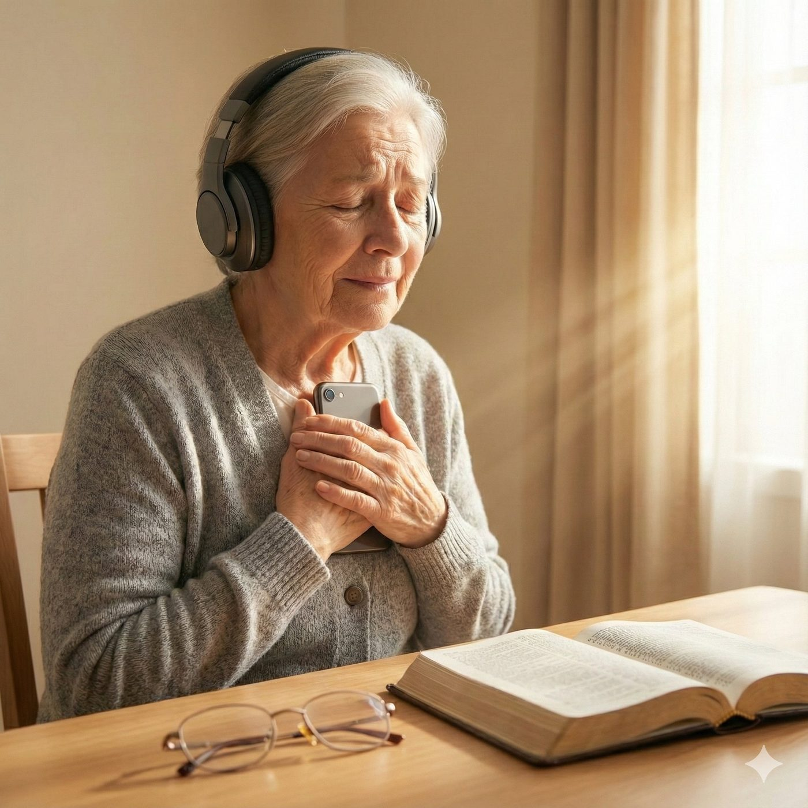

Sua conexão com Deus
em meio ao caos da rotina
Cinco minutos por dia que devolvem profundidade à sua fé. Devocional, oração, Caderno com Deus e adoração — feitos para o seu momento.
Três formas de caminhar com Deus
Simples como deve ser. Profundo como precisa ser. Ferramentas pensadas para o seu dia real.
Devocional diário
Conte como você está e receba uma palavra preparada para o seu momento — versículo, reflexão e oração em menos de cinco minutos.
Mural de Orações
Você nunca ora sozinho. Compartilhe pedidos, interceda por irmãos pelo Brasil e celebre respostas em comunidade.
Espaço de Adoração
Sons da Criação, meditações guiadas e louvores selecionados. Sua trilha sonora espiritual para cada hora do dia.
Uma comunidade que ora junto
Não caminhamos sozinhos nesta jornada. O Inspirar é o ponto de encontro de cristãos que buscam algo mais profundo. Compartilhe seus pedidos, interceda pelos pedidos dos outros e veja em tempo real irmãos clamando, agradecendo e celebrando respostas.
Uma palavra para o seu momento
Ansioso, grato, em luto, sobrecarregado. Conte como você está e receba uma palavra única, feita para o seu hoje — não genérica, não para todo mundo. Reserve cinco minutos para reconectar-se com Deus e com a sua paz interior.
"O inspirar.app agora faz parte da minha rotina matinal."
Laura Yane
Bancária · Pioneira do Beta
Meu Caderno com Deus
Descubra o poder transformador da escrita espiritual. O Inspirar guia o hábito do "Caderno com Deus" — uma prática diária que traz clareza, alivia o peso do dia e aprofunda a sua intimidade com Ele, uma página de cada vez.
"A escrita é a geometria da alma."
Sons que acalmam, sempre com você
Sons da Criação para focar e meditar. Meditações guiadas para dormir em paz. Louvores curados a cada dia. Sua trilha sonora espiritual foi desenhada para ser uma extensão da sua fé, não mais uma distração no celular.
Cinco níveis, uma vida inteira
A constância transforma. Sua jornada começa aprendiz e amadurece com o tempo.
Aprendiz
Os primeiros passos
Buscador
Sede que aprofunda
Semeador
Frutos surgem
Frutífero
Vida que transborda
Mestre
Caminhante constante
Suas dúvidas mais sinceras, sem rodeios
Sabemos o que passa pela sua cabeça antes de criar mais uma conta em mais um app.
"Vão me empurrar uma denominação?"
Não. Somos cristãos. Você escolhe sua tradição entre seis opções amplas — Católica Romana, Protestante Histórica, Pentecostal Clássica, Neopentecostal, Adventista ou Não-denominacional. Se a sua não estiver na lista, descreva livremente em "Outra".
"Vou ser bombardeada de notificação?"
Você decide. Por padrão, 1 notificação por dia (seu devocional na hora que escolher). Todo o resto é opt-in. Pode desativar tudo em um toque.
"O que fazem com minhas orações?"
Nada além do que você autorizar. Orações privadas ficam privadas e criptografadas. No Mural, só vai público o que você marcar. Seguimos a LGPD à risca.
"Custa quanto depois?"
Tudo essencial é gratuito para sempre. Devocional, mural, estudos básicos, sons da criação e comunidades — sem cobrar. O Premium é opcional.
"É americano traduzido?"
100% brasileiro. Operado pela Inspirar Soluções em Tecnologia LTDA (CNPJ 66.326.453/0001-10). Conteúdo em português, contexto brasileiro, suporte em português.
"E se eu desistir nas primeiras semanas?"
Foi por isso que criamos os Escudos. Proteção automática para os dias que faltar — sua sequência não zera de uma vez. A jornada de fé é longa, e o app te acompanha nela.
Sua próxima palavra de Deus já está esperando
Faça parte dos primeiros cristãos a construir essa caminhada com a gente. A história espiritual de milhares de brasileiros começa aqui — a sua também pode. Comece hoje, sem custo.